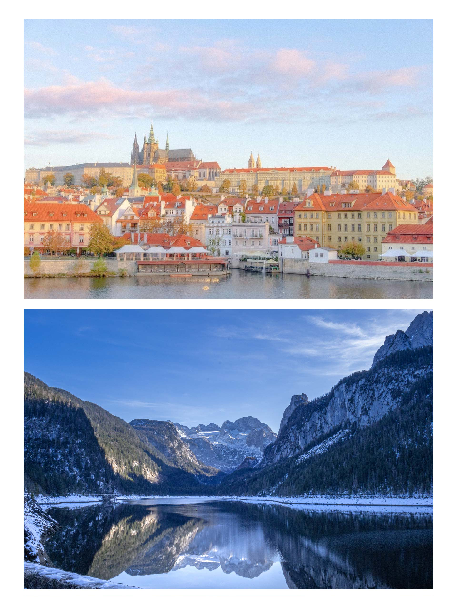
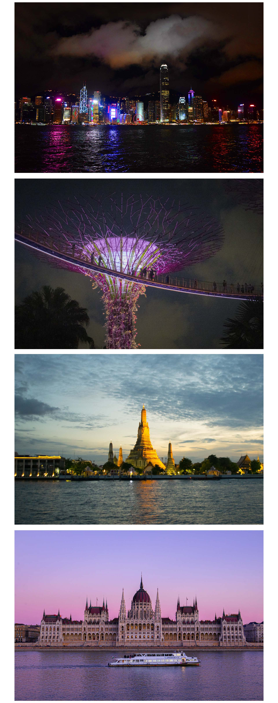
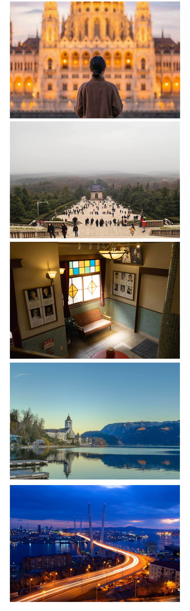

세계를 담아낸 렌즈의 시선, 그 아름다운 여정을 소개합니다.
DSLR과 미러리스 카메라로 포착한 찰나의 순간들은 라이트룸의 섬세한 후보정을 거쳐 하나의 여행지로 완성되었습니다.
각 프레임 속에는 낯선 땅에서 마주한 경이로운 풍경과 살아있는 문화, 그리고 여행자만이 느낄 수 있는 벅찬 감동이 고스란히 담겨 있습니다.
눈부신 일출부터 고요한 황혼까지, 활기찬 도시의 거리에서 고즈넉한 시골 마을까지 세계 곳곳에서 기록한 여행지 사진들과 함께,
AI 기술로 새롭게 탄생한 창의적인 이미지들도 함께 만나보실 수 있습니다.
이 컬렉션은 단순한 여행의 기록을 넘어, 세상을 바라보는 새로운 시각을 제안합니다.
전문가의 기술과 여행자의 열정, 그리고 AI의 상상력이 한데 어우러진 이 작품들을 통해 세계를 누비는 설렘을 함께 느껴보시기 바랍니다.
여행 포토그래피 : 100%


